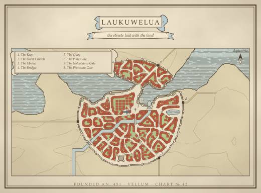
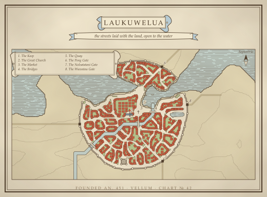
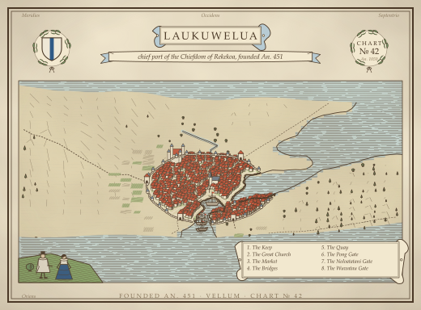
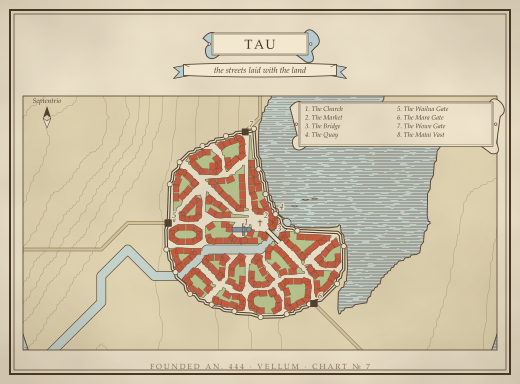
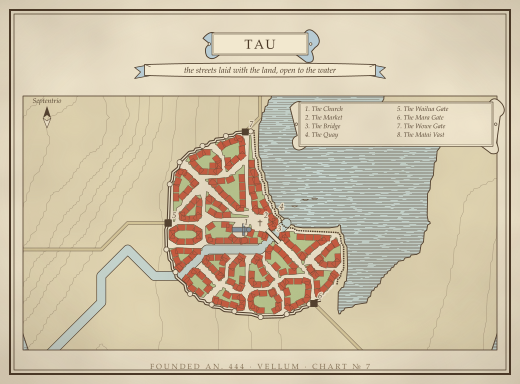
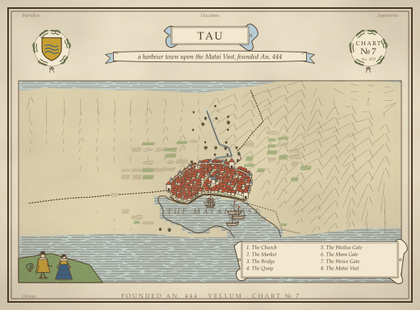

Every capital and town is a river-mouth port, and a quarter to a half of a plain ring round each lies in the sea. The profile is not shown: today's plate stands its front row of houses before the wall, so both draw the same there.
Laukuwelua, the capital (seed 42, index 0), streets with the land

From directly above. Walled on the water too

From directly above. Open to the water, a quay where the wall would standThe bird's-eye. Walled on the water too

The bird's-eye. Open to the water, a quay where the wall would stand
Tau, a town (seed 7, index 4), streets with the land

From directly above. Walled on the water too

From directly above. Open to the water, a quay where the wall would standThe bird's-eye. Walled on the water too

The bird's-eye. Open to the water, a quay where the wall would stand